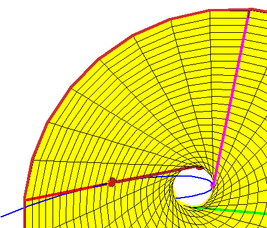

The Fourth Tangent Line
The Fourth Tangent Line
Now consider a fourth line tangent to the rational normal curve.
It is sufficient to consider only those lines tangent at a point along the arc
between the red and
magenta points of tangency of the curve and the
hyperboloid.
From this closeup, it should be evident that
every such tangent line meets the hyperboloid in two points, which gives two
real lines meeting the four given lines that are tangent to the rational
normal curve.
